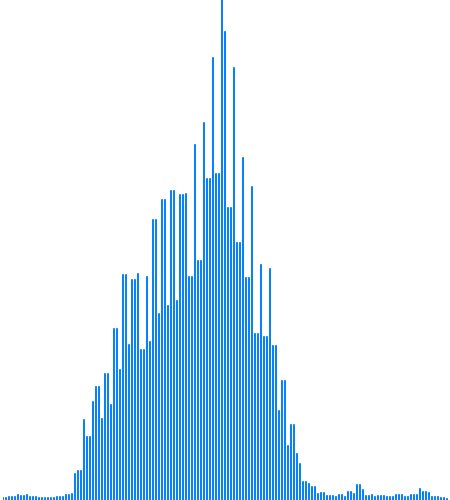
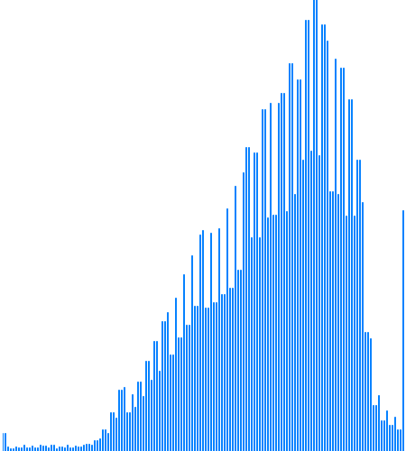
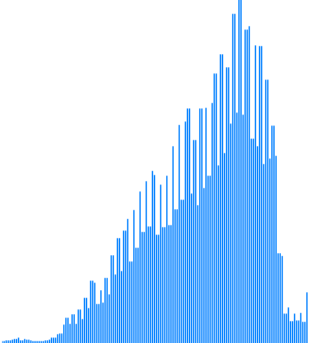
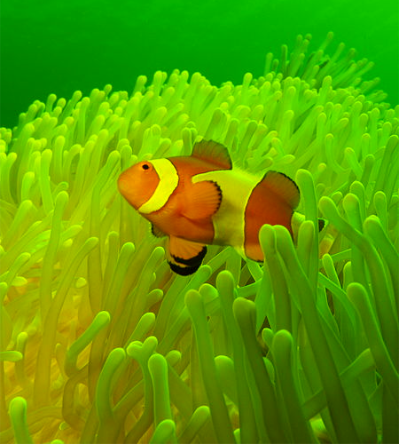

Image Histogram
Graphical Representation of the Tonal Distribution
Los siguientes ejemplos tienen el propósito de desarrollar y practicar la transición entre el lenguaje Processing y el lenguaje p5.js observando sus principales diferencias, ya que ambos lenguajes se ven muy similar, y cómo convertir de uno a otro.
Este programa esta basado en un sketch básico realizado por el sitio web mywonderland.es, en el lenguaje Processing, con el fin de observar un ejemplo en el que se utilizan las funciones 'mouseX, mouseY'. Crea una ventana con un ancho de 600px y una altura de 400px, y luego empieza a dibujar un cuadrado azul de 50px por 50px según la posición del mouse, al mismo tiempo que el fondo de la ventana se va rellenando de color gris, dando la ilusión que solo existe un cuadrado azul moviéndose por toda la ventana siguiendo al mouse.
Comandos por teclado
| Tecla | Operación | Histograma | Imagen resultante |
|---|---|---|---|
 |
Original |  |
|
 |
Media aritmética(Ecala de grises) |
 |  |
 |
Componente más grande(Ecala de grises) |
 |
|
 |
Promedio ponderado Luma(Ecala de grises) |
||
 |
Colores opuestos |  |
|
 |
Acentuar los bordes |  |
 |
 |
Detección de bordes |  |
|
 |
Máscara de desenfoque 5 × 5(SIN MÁSCARA DE IMAGEN) |
 | |
Sustraer componente Rojo(Cian) |
 |  |
|
 |
Sustraer componente Verde(Magenta) |
 |
|
 |
Sustraer componente Azul(Amarillo) |
 |
 |
Image of Ocellaris Clownfish (Amphiprion ocellaris), also known as the False Percula Clownfish or Common Clownfish. Source: Wikipedia, the free encyclopedia.Amphiprion ocellaris at Gilli Banta
p5*js Code
var maxRange = 256;
var histogram = new Array(maxRange);
var lienzo01;
var lienzo02;
var heightI = 600;
var widthI = 450;
// Histograma
var hist = new Array(256);
function preload() {
img_01 = loadImage("https://upload.wikimedia.org/wikipedia/commons/thumb/0/0b/Amphiprion_ocellaris_at_Gilli_Banta.JPG/450px-Amphiprion_ocellaris_at_Gilli_Banta.JPG");
img_02 = loadImage("https://upload.wikimedia.org/wikipedia/commons/thumb/0/0b/Amphiprion_ocellaris_at_Gilli_Banta.JPG/450px-Amphiprion_ocellaris_at_Gilli_Banta.JPG");
}
function setup() {
var myCanvas = createCanvas(widthI*2, heightI);
myCanvas.parent('histograma');
background(255);
lienzo01 = createGraphics(widthI,heightI);
lienzo02 = createGraphics(widthI,heightI);
calcHis();
}
function draw() {
drawLienzo01();
image(lienzo01,0,0);
image(lienzo02, widthI, 0);
}
function keyPressed() {
switch(key){
case '0':
regresar();
break;
case '1':
regresar();
filtrosBlancoNegro(1);
break;
case '2':
regresar();
filtrosBlancoNegro(2);
break;
case '3':
regresar();
filtrosBlancoNegro(3);
break;
case '4':
regresar();
complementary();
break;
default:
break;
}
calcHis();
drawHis();
}
// Funciones diseñadas
const calcHis = ()=> { // Calcula los valores del histograma
// Inicializa el arreglo
for (i = 0; i <= 256; i++) {
hist[i] = 0;
}
// Calculate the histogram
for (var i = 0; i < img_02.width; i++) {
for (var j = 0; j < img_02.height; j++) {
var bright = int(brightness(get(i, j)));
hist[bright]++;
}
}
}
const drawLienzo01 = ()=>{ // Dibuja la imagen en el primer lienzo
lienzo01.image(img_02, 0, 0);
}
const drawHis = ()=>{ // Dibuja los histogramas
// Obtiene el valor maximo del arreglo
histMax = max(hist);
// Le da propiedades al lienzo
lienzo02.background(255);
lienzo02.stroke(0,0,255);
// Dibuja las lineas del histograma en el lienzo
for (var i = 0; i < 2.5*img_02.width; i += 3) {
var which = int(map(i, 0, 2.5*widthI, 0, 255));
var y = int(map(hist[which], 0, histMax, img_02.height, img_02.height-500));
lienzo02.line(i, img_02.height, i, y);
}
}
const filtrosBlancoNegro = (gray)=>{ // Aplica los filtros de blanco y negro
let lightness;
img_02.loadPixels();
for (let y = 0; y < img_02.height; y++)
{
for (let x = 0; x < img_02.width; x++)
{
let index = (x+y*img_02.width)*4; // Posicion del pixel
let r=img_02.pixels[index+0]; // Componente Red
let g=img_02.pixels[index+1]; // Componente Green
let b=img_02.pixels[index+2]; // Componente Blue
let a=img_02.pixels[index+3]; // Componente Alpha
if (gray===1) // Media aritmetica
{
let I=(r+g+b)/3;
lightness = I;
} else if (gray===2) // Componente mas grande de un color
{
let V= max(r,g,b);
lightness = V;
} else if (gray===3) // Promedio ponderado de RGB con corrección gamma (Luma)
{
let Y601= 0.2989*r + 0.5870*g + 0.1140*b; // SDTV
lightness = Y601;
}
img_02.pixels[index+0]=lightness;
img_02.pixels[index+1]=lightness;
img_02.pixels[index+2]=lightness;
img_02.pixels[index+3]=a;
}
}
img_02.updatePixels();
}
const complementary = ()=>{ // Aplica el filtro complementario
img_02.loadPixels();
for(var y = 0 ; y < heightI; y++) {
for(var x = 0; x < widthI; x++) {
let index = (x + y * widthI) * 4;
img_02.pixels[index + 0] = 255 - img_02.pixels[index + 0];
img_02.pixels[index + 1] = 255 - img_02.pixels[index + 1];
img_02.pixels[index + 2] = 255 - img_02.pixels[index + 2];
}
}
img_02.updatePixels();
}
const regresar = ()=>{ // Vuelve la imagen como inicialmente estaba
img_02.loadPixels();
img_01.loadPixels();
for(y = 0; y < img_02.height; y++ ) {
for(x = 0; x < img_02.width; x++) {
let index = (x + y*img_02.width)*4;
img_02.pixels[index + 0] = img_01.pixels[index + 0];
img_02.pixels[index + 1] = img_01.pixels[index + 1];
img_02.pixels[index + 2] = img_01.pixels[index + 2];
img_02.pixels[index + 3] = img_01.pixels[index + 3];
}
}
img_01.updatePixels();
img_02.updatePixels();
}